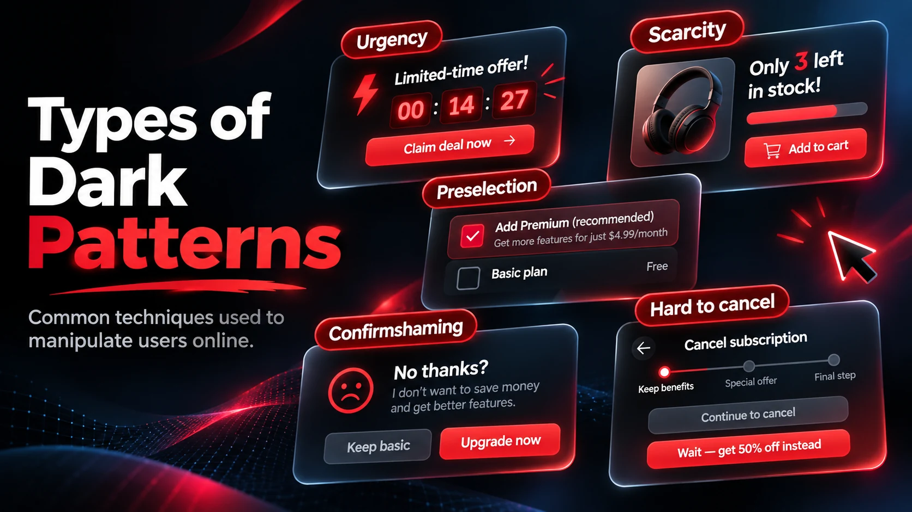

Why classify dark patterns?
Dark patterns do not all look the same. Some hide information, others interrupt the user, and some make a simple action unnecessarily long. Researchers group these behaviours into categories so designers can recognise them and compare examples. A useful study by Gray and colleagues (2018) describes five broad strategies: nagging, obstruction, sneaking, interface interference and forced action. [1]

These strategies often overlap. A cookie banner may combine a confusing visual hierarchy with repeated reminders. A subscription service may hide important conditions when you join and create obstacles when you try to cancel. [3]
The five main strategies
1. Nagging
Nagging means repeatedly interrupting users with the same request. For example, an app may ask again and again for notifications to be enabled. A reminder can be helpful, but constant requests may wear down a person until they choose the answer the company wants. Better design respects a refusal and allows people to change settings later.
2. Obstruction
Obstruction makes an action difficult for no good reason. The classic example is the roach motel: joining is easy, but leaving is hard. A service might allow registration in two clicks while cancellation requires searching through several menus, reading retention messages and contacting support.
3. Sneaking
Sneaking happens when important information or an unwanted addition is hidden or delayed. A product may enter the basket without a clear request, or fees may appear only near payment. The user can technically see the information, but it is shown at a moment when they are less likely to stop.
4. Interface interference
Interface interference changes the presentation of choices to favour one result. One option may be bright and large while the alternative is tiny. It also includes confusing wording and confirmshaming, when the refusal says something insulting such as “No thanks, I dislike saving money.” The problem is not colour itself but unfair pressure.
5. Forced action
Forced action requires users to do something unnecessary to complete their original task. For instance, a shop might demand account registration before showing a delivery estimate, even when that information could be displayed without registration. The extra step may collect more data or increase sign-ups.
Common examples
| Pattern | Example | A better choice |
|---|---|---|
| Hidden costs | Fees appear at the final checkout step. | Show total cost from the start. |
| Difficult cancellation | Many screens to end a subscription. | Offer a clear cancellation control. |
| Disguised advertisements | An advertisement looks like a normal article. | Label advertising clearly. |
| Preselected choices | A marketing newsletter is already checked. | Leave optional consent unchecked. |
| Confirmshaming | The decline button makes the visitor feel guilty. | Use neutral words such as “No thanks”. |
| Fake urgency | A countdown resets when the page reloads. | Only use genuine deadlines. |
Princeton researchers later examined dark patterns in shopping websites and organised their observations into seven broader categories and fifteen types. This is a different classification from the five strategies above, not a contradiction: the studies answer different questions. [2]
How can a designer avoid them?
First, put the user goal at the centre of the design. If someone wants to buy a product, make the price and conditions visible. If they want to say no, give them a straightforward way to refuse. If they want to leave a service, do not create unnecessary steps. Second, test interfaces with real users and ask whether their final choice matches what they meant to do.
Good HCI is not about removing every suggestion or commercial offer. A business can advertise, recommend products and explain why a service might be useful. The difference is that an honest interface presents the information clearly and leaves the final decision with the user. The interactive examples later in this section show the difference.
Sources
- Gray, C. M. et al. (2018). The Dark (Patterns) Side of UX Design. ACM CHI paper.
- Mathur, A. et al. (2019). Dark Patterns at Scale. Princeton research.
- Federal Trade Commission (2022). Bringing Dark Patterns to Light. FTC report.